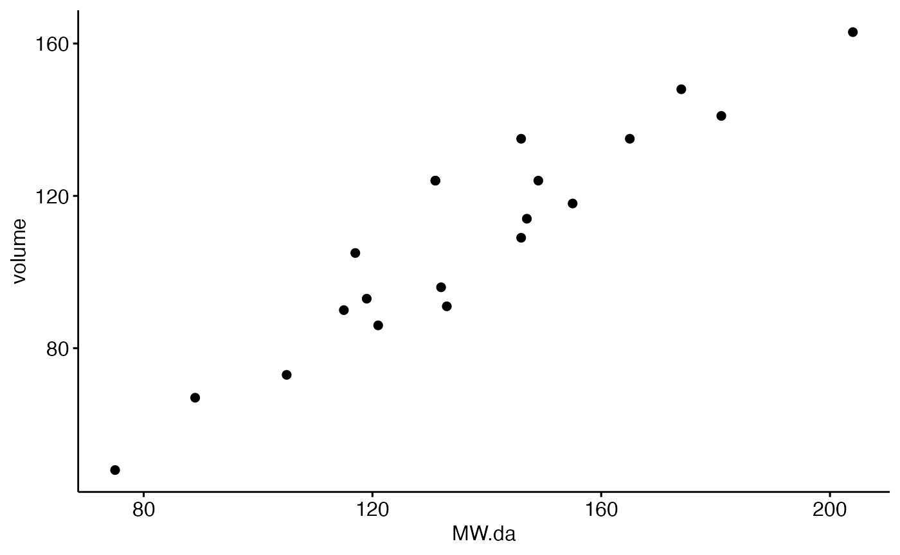
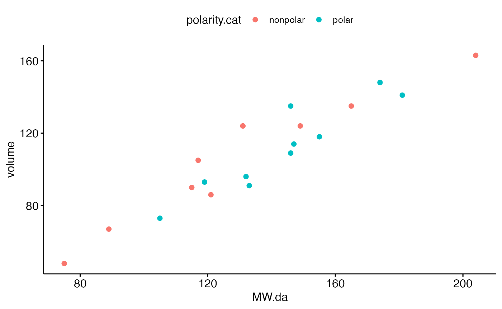
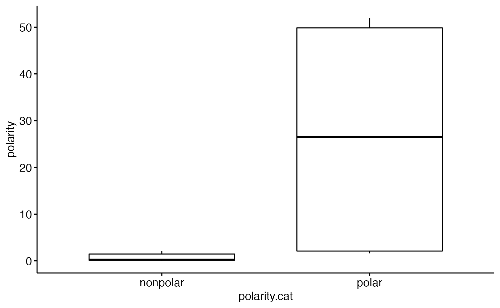

Worked example: Data visualization in R
aminio-acids-worked_example_data_visualization-DeprecatedQ.Rmd
library(compbio4all)In this chapter we’ll test out some of R’s data visualization capabilities by exploring the chemical properties of amino acids. The chemical properties of amino acids are very important for understanding sequence evolution because mutations are more likely to replace an amino acid with a chemically similar one than with one that is very different. For example, a mutation is more likely to change one hydrophillic amino acid for another than to change a hydrophillic amino acid to a hydrophobic one. This is because the precise secondary and tertiary structure - and thus the function – of a protein depends on the chemical properties of all of its amino acids.
Preliminaries
Packages
First, load general packages for plotting. There are many ways to plot data in R, but the most popular and powerful these days is ggplot2. We’ll be using an extension of ggplot2 called ggpubr.
Data
Load data with the data() command
data(aa_chars_subset)This name is long, so let’s use the assignment operator <- to give it a shorter name, just “aa”. Run the code to do this.
aa <- aa_chars_subsetData exploration: Getting to know data
Our data in this particular case is a data.frame, which is kind of like a spreadsheet in R-land. We can confirm this using the is() command. In the code chunk below type is(aa) and run the chunk. Four or so things will show up in the console. When you do this usually the first one is the most relevant one.
Spreadsheets are grids of data, but we can’t see yet what we’re looking at. This is a major obstacle in moving from working with a visual tool like Excel to R. We can use R commands to start to get an idea of what we are working with.
First question: How big is this grid? The dim() command tells us how large things like dataframes and matrices are in R. Type dim(aa) in the code chunk below. The first number will be the number of rows, the second will be the number of columns.
Ok, so we are getting a sense for this dataframe thingy, but its still a bit abstract. If we want to see the whole thing like it was a spreadsheet we can use View(). Type View(aa) in the chunk below. Note that its “V” uppercase, not lower case. This is kind of annoying, but R is case sensitive.
What happens when you run View() on aa?
Often we’d like to see the dataframe, or at least part of it, in the R console or in our R notebook. We can see part of the dataframe with head(aa). Type this in the chunk below and run it. R might print things out in a weird way depending on how wide your screen is. You can adjust the width of the RStudio pane you working in or zoom out and re-run the command to see if it helps.
We can also use tail() to see the bottom of the dataframe. Type tail(aa) in the chunk below.
If we want to see the whole dataframe we can just type aa in a chunk and run it.
aa
#> letter MW.da volume bulkiness polarity isoelectric.pt hydrophobe.34
#> 1 A 89 67 11.50 0.00 6.00 1.8
#> 2 C 121 86 13.46 1.48 5.07 2.5
#> 3 D 133 91 11.68 49.70 2.77 -3.5
#> 4 E 146 109 13.57 49.90 3.22 -3.5
#> 5 F 165 135 19.80 0.35 5.48 2.8
#> 6 G 75 48 3.40 0.00 5.97 -0.4
#> 7 H 155 118 13.69 51.60 7.59 -3.2
#> 8 I 131 124 21.40 0.13 6.02 4.5
#> 9 K 146 135 15.71 49.50 9.74 -3.9
#> 10 L 131 124 21.40 0.13 5.98 3.8
#> 11 M 149 124 16.25 1.43 5.74 1.9
#> 12 N 132 96 12.28 3.38 5.41 -3.5
#> 13 P 115 90 17.43 1.58 6.30 -1.6
#> 14 Q 147 114 14.45 3.53 5.65 -3.5
#> 15 R 174 148 14.28 52.00 10.76 -4.5
#> 16 S 105 73 9.47 1.67 5.68 -0.8
#> 17 T 119 93 15.77 1.66 6.16 -0.7
#> 18 V 117 105 21.57 0.13 5.96 4.2
#> 19 W 204 163 21.67 2.10 5.89 -0.9
#> 20 Y 181 141 18.03 1.61 5.66 -1.3
#> hydrophobe.35 saaH2O faal.fold polar.req freq charge hydropathy volume.cat
#> 1 1.6 113 0.74 7.0 7.80 un hydrophobic verysmall
#> 2 2.0 140 0.91 4.8 1.10 un hydrophobic small
#> 3 -9.2 151 0.62 13.0 5.19 neg hydrophilic small
#> 4 -8.2 183 0.62 12.5 6.72 neg hydrophilic medium
#> 5 3.7 218 0.88 5.0 4.39 un hydrophobic verylarge
#> 6 1.0 85 0.72 7.9 6.77 un neutral verysmall
#> 7 -3.0 194 0.78 8.4 2.03 pos neutral medium
#> 8 3.1 182 0.88 4.9 6.95 un hydrophobic large
#> 9 -8.8 211 0.52 10.1 6.32 pos hydrophilic large
#> 10 2.8 180 0.85 4.9 10.15 un hydrophobic large
#> 11 3.4 204 0.85 5.3 2.28 un hydrophobic large
#> 12 -4.8 158 0.63 10.0 4.37 un hydrophilic small
#> 13 -0.2 143 0.64 6.6 4.26 un neutral small
#> 14 -4.1 189 0.62 8.6 3.45 un hydrophilic medium
#> 15 -12.3 241 0.64 9.1 5.23 pos hydrophilic large
#> 16 0.6 122 0.66 7.5 6.46 un neutral verysmall
#> 17 1.2 146 0.70 6.6 5.12 un neutral small
#> 18 2.6 160 0.86 5.6 7.01 un hydrophobic medium
#> 19 1.9 259 0.85 5.2 1.09 un hydrophobic verylarge
#> 20 -0.7 229 0.76 5.4 3.30 un neutral verylarge
#> polarity.cat
#> 1 nonpolar
#> 2 nonpolar
#> 3 polar
#> 4 polar
#> 5 nonpolar
#> 6 nonpolar
#> 7 polar
#> 8 nonpolar
#> 9 polar
#> 10 nonpolar
#> 11 nonpolar
#> 12 polar
#> 13 nonpolar
#> 14 polar
#> 15 polar
#> 16 polar
#> 17 polar
#> 18 nonpolar
#> 19 nonpolar
#> 20 polarSometimes we may want to just see the names of all the columns. This is done with names(aa). Type this code and run it below
Numeric summaries data
We can get numeric summaries of data using the summary() command. Type summary(aa) in the chunk below and run it.
Data can take many forms. If data are numeric then you can calculate means, medians, minimums, and maximums (we’ll ignore “1st Qu” and “3rd Qu” for now). If data are categorical you can count up how many rows of data are in each category.
It can be useful to get a summary of just one column. You can do this by selecting the column with a dollar sign like this: summary(aa$volume) . Type this in the chunk below and run it (don’t type the period)
There are times when we might just want one type of numeric summary, like the mean, for a column. In that case we can do this: mean(aa$volume). Type that below.
In the assignment associated with this exercise you will be asked to provide the mean for a column. Run the appropriate code in the chunk below and enter the answer on TopHat. (Note that the exercise might not be activated until after class).
In the assignment associated with this exercise you will be asked to provide the max for a column. This is done with the max() command. Run the appropriate code in the chunk below and enter the answer on TopHat.
For categorical variables data are described by discrete words and fall into groups. For example, the “hydropathy” column describes each amino acid as hydrophobic, phydrophilic, or neutral. We can see how many amino acids are in each group using summary(aa$hydropathy). Run this code in the chunk below.
It doesn’t make sense to take the mean, max, etc of categorical data. If you try, R will throw and error, though often what it says is pretty cryptic.
mean(aa$letter)
#> Warning in mean.default(aa$letter): argument is not numeric or logical:
#> returning NA
#> [1] NAWhen we have two categorical variables, like charge and hydropathy, we may want to know how the data fall out into both categories at the same time. For example, we have a hydropathy column and a polarity.cat column. How many amino acids are hydrophilic AND polar?
We can do this by typing table(aa\(hydropathy,aa\)polarity.cat). Remember, though, that we can let RStudio look up the variables names. Practice this by typing table(aa$ and then waiting a second. You can then select from the list of variable names. Add the comma, then type aa$ again and select from the list again. Finish with the right parentheses.
Plotting data
Numeric summaries from summary(), mean(), and table() are useful, but pictures are usually most helpful. We’re going to use a plotting package called ggpubr, which extends the famous ggplot2 package by Hadley Wickham. Make sure that you have run the code library(ggpubr) to get ggpubr R into memory..
These data have a column called MW.da, which is the molecular weight in daltons, and also a column called volume. What is the relationship between the two variables? Make a guess.
We can visualize the relationship with a scatterplot. A scatterplot has a numeric variable on the x-axis and a different numeric variable on the y-axis. The code below makes a simple scatter plot. Note the following things
- there are 3 arguments, data, x and y
- an equals sign (=) assigns a value to an argument
- aa is NOT in quotes, while MW.da and volume are. This is a bit annoying.
ggscatter(data = aa, x = "MW.da", y = "volume")
One thing about R code is that it can span multiple lines. In the code below click after the first command and press enter, then click after the second comma and press enter. Then run the chunk. What happens?
ggscatter(data = aa, x = "MW.da", y = "volume")
Writing code on multiple lines can make it easier to read. It also allows you to add comments to each part of a piece of code. To make a comment, we need the comment character, which in R is the hashtag #.
In the code below put a # after each line, and add a note about what the line does, then run the code.
ggscatter(data = aa,
x = "MW.da",
y = "volume")Adding color to a plot
We can color code things easily in R using categorical variables. Let’s assign a different color to the different polarities. We do this by add in “color =” to the code. Note that we have to put the categorical variable name in quotes " "
ggscatter(data = aa,
x = "MW.da",
y = "volume",
color = "polarity.cat")
We could also color code by a different variable, such as charge, hydropathy, or volumne.ca. Selection one of these and replace “polarity.cat” with it.
ggscatter(data = aa,
x = "MW.da",
y = "volume",
color = "polarity.cat") # replace this; leave the quotes
Changing symbols
We can also make a plot more interesting by changing the plotting symbols. In the code below change the word color to shape. (Both of these are called arguments)
ggscatter(data = aa,
x = "MW.da",
y = "volume",
color = "polarity.cat") # replace this; leave the quotes
Adding more stuff to a plot
The relationship between the two variables is pretty obvious, but we can emphasize it by adding a line of best fit, aka a regression line. In the code below remove the word “color” and change the word for a categorical variable to reg.line.
ggscatter(data = aa,
x = "MW.da",
y = "volume",
color = "polarity.cat") Boxplots
Another way to look at data is to plot categorical variables along the x-axis and a numeric variable on the y. We can do this with boxplots and the function ggboxplot(). Polarity can be measured quantitatively, so we can compare the categories in polarity.cat to the numeric values in polarity.
ggboxplot(data = aa,
x = "polarity.cat",
y = "polarity")
In a boxplot the thick line shows you the median. Most of the data points fall within the boxes, and the lines that extend up and down (“whiskers”) usually extend to the max and minimum. What is the approximate median (to the nearest 5 units) of polar amino acids? How much variation is there? (Answer on TopHat)
Hydrophobicity is a major characteristic of amino acids. This data set has two variables, hydrophobe.34 and hydrophobe.34 (the numbers just refer to different references where the values were derived). Make a boxplot using ggboxplot with polarity.cat on the x axis (as above) hydrophobe.34 on the y axis. Remember to put things in quotes as needed.
Multivariate groups
There are many important characteristics of amino acids. When data have multiple variables like this it is often called multivariate data. (There is an important different between multivariate data and multivarible analyses, but I’ll let your stats profs teach about that). Multivariate data can be hard to make sense of. A classic way to think about amino acids is to make a Venn Diagram showing similarities between amino acids. You can see this Venn Diagram here: http://www.russelllab.org/aas/ . Amino acids that are close together are generally similar, especially if they are within the same circle. So I and L are similar to each other, and Y and W are similar, but I and Y are not so similar.
These Venn Diagrams are based on deep knowledge of the chemistry of the amino acids. Let’s see if we can use a computer algorithm called cluster analysis to arrive at similar conclusions.
First, for cluster analysis we are only going to use the numeric variables. Let’s get rid of those variables. The first column has our amino acid letter, and columns 2 through 11 have numeric variables. (column 12 is a numeric variable, relative frequency, but we’re going to drop it).
To make our subset we’re going to use R’s square bracket notation.
First, run the code below and think about what happened
aa[ , ]
#> letter MW.da volume bulkiness polarity isoelectric.pt hydrophobe.34
#> 1 A 89 67 11.50 0.00 6.00 1.8
#> 2 C 121 86 13.46 1.48 5.07 2.5
#> 3 D 133 91 11.68 49.70 2.77 -3.5
#> 4 E 146 109 13.57 49.90 3.22 -3.5
#> 5 F 165 135 19.80 0.35 5.48 2.8
#> 6 G 75 48 3.40 0.00 5.97 -0.4
#> 7 H 155 118 13.69 51.60 7.59 -3.2
#> 8 I 131 124 21.40 0.13 6.02 4.5
#> 9 K 146 135 15.71 49.50 9.74 -3.9
#> 10 L 131 124 21.40 0.13 5.98 3.8
#> 11 M 149 124 16.25 1.43 5.74 1.9
#> 12 N 132 96 12.28 3.38 5.41 -3.5
#> 13 P 115 90 17.43 1.58 6.30 -1.6
#> 14 Q 147 114 14.45 3.53 5.65 -3.5
#> 15 R 174 148 14.28 52.00 10.76 -4.5
#> 16 S 105 73 9.47 1.67 5.68 -0.8
#> 17 T 119 93 15.77 1.66 6.16 -0.7
#> 18 V 117 105 21.57 0.13 5.96 4.2
#> 19 W 204 163 21.67 2.10 5.89 -0.9
#> 20 Y 181 141 18.03 1.61 5.66 -1.3
#> hydrophobe.35 saaH2O faal.fold polar.req freq charge hydropathy volume.cat
#> 1 1.6 113 0.74 7.0 7.80 un hydrophobic verysmall
#> 2 2.0 140 0.91 4.8 1.10 un hydrophobic small
#> 3 -9.2 151 0.62 13.0 5.19 neg hydrophilic small
#> 4 -8.2 183 0.62 12.5 6.72 neg hydrophilic medium
#> 5 3.7 218 0.88 5.0 4.39 un hydrophobic verylarge
#> 6 1.0 85 0.72 7.9 6.77 un neutral verysmall
#> 7 -3.0 194 0.78 8.4 2.03 pos neutral medium
#> 8 3.1 182 0.88 4.9 6.95 un hydrophobic large
#> 9 -8.8 211 0.52 10.1 6.32 pos hydrophilic large
#> 10 2.8 180 0.85 4.9 10.15 un hydrophobic large
#> 11 3.4 204 0.85 5.3 2.28 un hydrophobic large
#> 12 -4.8 158 0.63 10.0 4.37 un hydrophilic small
#> 13 -0.2 143 0.64 6.6 4.26 un neutral small
#> 14 -4.1 189 0.62 8.6 3.45 un hydrophilic medium
#> 15 -12.3 241 0.64 9.1 5.23 pos hydrophilic large
#> 16 0.6 122 0.66 7.5 6.46 un neutral verysmall
#> 17 1.2 146 0.70 6.6 5.12 un neutral small
#> 18 2.6 160 0.86 5.6 7.01 un hydrophobic medium
#> 19 1.9 259 0.85 5.2 1.09 un hydrophobic verylarge
#> 20 -0.7 229 0.76 5.4 3.30 un neutral verylarge
#> polarity.cat
#> 1 nonpolar
#> 2 nonpolar
#> 3 polar
#> 4 polar
#> 5 nonpolar
#> 6 nonpolar
#> 7 polar
#> 8 nonpolar
#> 9 polar
#> 10 nonpolar
#> 11 nonpolar
#> 12 polar
#> 13 nonpolar
#> 14 polar
#> 15 polar
#> 16 polar
#> 17 polar
#> 18 nonpolar
#> 19 nonpolar
#> 20 polarNow run this code and think about it:
aa[, 1]
#> [1] A C D E F G H I K L M N P Q R S T V W Y
#> Levels: A C D E F G H I K L M N O P Q R S T U V W YNow run this code and think about it.
aa[1, ]
#> letter MW.da volume bulkiness polarity isoelectric.pt hydrophobe.34
#> 1 A 89 67 11.5 0 6 1.8
#> hydrophobe.35 saaH2O faal.fold polar.req freq charge hydropathy volume.cat
#> 1 1.6 113 0.74 7 7.8 un hydrophobic verysmall
#> polarity.cat
#> 1 nonpolarNow instead of 1 type 1:2. Try both scenarios.
Ok, now let’s make our subset. We want the second through 11th column, and all of the rows
aa_subset <- aa[, 2:11]Check that you got what you want using head(aa_subset)
Now we’re going to do something a bit goofy with the names of the amino acids. What we need to do is assign them to the row names of our aa_subset dataframe. Just run the code below
row.names(aa_subset) <- aa$letterNow look at what we have. What’s on the far left hand side of what gets displayed?
head(aa_subset)
#> MW.da volume bulkiness polarity isoelectric.pt hydrophobe.34 hydrophobe.35
#> A 89 67 11.50 0.00 6.00 1.8 1.6
#> C 121 86 13.46 1.48 5.07 2.5 2.0
#> D 133 91 11.68 49.70 2.77 -3.5 -9.2
#> E 146 109 13.57 49.90 3.22 -3.5 -8.2
#> F 165 135 19.80 0.35 5.48 2.8 3.7
#> G 75 48 3.40 0.00 5.97 -0.4 1.0
#> saaH2O faal.fold polar.req
#> A 113 0.74 7.0
#> C 140 0.91 4.8
#> D 151 0.62 13.0
#> E 183 0.62 12.5
#> F 218 0.88 5.0
#> G 85 0.72 7.9Compare that to
head(aa)
#> letter MW.da volume bulkiness polarity isoelectric.pt hydrophobe.34
#> 1 A 89 67 11.50 0.00 6.00 1.8
#> 2 C 121 86 13.46 1.48 5.07 2.5
#> 3 D 133 91 11.68 49.70 2.77 -3.5
#> 4 E 146 109 13.57 49.90 3.22 -3.5
#> 5 F 165 135 19.80 0.35 5.48 2.8
#> 6 G 75 48 3.40 0.00 5.97 -0.4
#> hydrophobe.35 saaH2O faal.fold polar.req freq charge hydropathy volume.cat
#> 1 1.6 113 0.74 7.0 7.80 un hydrophobic verysmall
#> 2 2.0 140 0.91 4.8 1.10 un hydrophobic small
#> 3 -9.2 151 0.62 13.0 5.19 neg hydrophilic small
#> 4 -8.2 183 0.62 12.5 6.72 neg hydrophilic medium
#> 5 3.7 218 0.88 5.0 4.39 un hydrophobic verylarge
#> 6 1.0 85 0.72 7.9 6.77 un neutral verysmall
#> polarity.cat
#> 1 nonpolar
#> 2 nonpolar
#> 3 polar
#> 4 polar
#> 5 nonpolar
#> 6 nonpolarOk, now let’s do cluster analysis. Cluster analysis is an exploratory data analysis tool that let’s you look for natural groupings in data. Its related to machine learning. Its common in genetics and community ecology, among other things. We can do a cluster analysis in R like this.
First, we need to assess how similar are amino acids are to each other in a way to take into account all 10 columns of our data. This can be done with a thing called a multivariate distance matrix. We won’t worry about the details right now. (If you want, you can try to think about points spread out in 3D space and measuring the distance between each one; now think about them spread out in 10-dimensional space and think about the distance between each one. Don’t hurt yourself doing this).
aa_dist <- dist(aa_subset, method = "euclidean") # distance matrixThe dist() command just made a distance matrix for us. We can use is to see what R tells us about it
is(aa_dist)
#> [1] "dist"This is a big matrix with lots of decimal places, so we can look at it most easily if we type round(aa_dist) . Type that code below
This might not fit well on your screen. If you have trouble try this (sorry, not going to explain it)
round(as.matrix(aa_dist)[1:5,1:5])
#> A C D E F
#> A 0 46 81 112 147
#> C 46 0 53 75 102
#> D 81 53 0 39 101
#> E 112 75 39 0 71
#> F 147 102 101 71 0Small numbers mean that, taking all 10 variables into account, two amino acids are similar to each other. For example, if you look at just the upper left hand part of the big grid A and C have a value of 46. Big numbers mean that, taking all 10 variables into account, two amino acids are very different. A and E have a value of 112. So A and C are closer together or more similar than A and E.
This matrix thingy is hard to interpret, so we can turn it into a graph. We’ll use the hclust() function, which is a type of cluster analysis.
aa_cluster<- hclust(aa_dist, method="ward.D")Now let’s plot the results using R’s basic plot() command
plot(aa_cluster)As I noted above, according to expert biochemists, I and L are similar to each other, and Y and W are similar, but I and Y are not so similar. Could R’s cluster algorithm figure this out?
To use phylogeny terms, I and L appear as Sisters on the tree. Cool, that worked. However, Y and F are sisters, and W is one step removed. Refer back to the Venn Diagram. Are F and Y considered similar by the experts?
On the original Venn Diagram there are 3 large circles, and several smaller ones. What are the labels of the circles? (Answer in TopHat)
On the Venn Diagram the following amino acids are considered hydrophobic (note that this isn’t exactly the same as our data)
C T V G A I L M F Y W H K
There’s some overlap with the left most group, but its far from perfect. So our branch diagram has 3 major groupings, and the experts have 3 major groups, but they don’t match up perfectly. There could be many reasons for this, but it could be that we’re considering different data than what the experts considered important, or that we we used a computer algorithm that actually knows nothing about biochemistry!
Notes for Further study
The following notes may be added to this chapter in the future; ignore them unless you are super curious about clustering algorithms
UPGMA
Wikipedia has a step by step introduction to UPGMA: https://en.wikipedia.org/wiki/UPGMA
aa_cluster<- hclust(aa_dist, method="ward.D")
b <-sim2dist(BLOSUM45[1:20,1:20], maxSim = max(BLOSUM45[1:20,1:20]))
b_dist <- dist(b, method = "euclidean") # distance matrix
par(mfrow = c(1,2))
plot(hclust(b_dist, method="ward.D"))
plot(hclust(aa_dist, method="ward.D"))
BLOSUM45Neighbor joining
https://en.wikipedia.org/wiki/Neighbor_joining
original publication has examples
other examples online
hclust algorithms
hclust can use the follwing methods to build the tree
- “ward.D”, “ward.D2”
- “single”: “closely related to the minimal spanning tree”
- “complete”
- “average” (= UPGMA), which is a method previous used for building phylogenetic trees
- “mcquitty” (= WPGMA), “median” (= WPGMC)
- “centroid” (= UPGMC).
From ?hclust “This function performs a hierarchical cluster analysis using a set of dissimilarities for the n objects being clustered. Initially, each object is assigned to its own cluster and then the algorithm proceeds iteratively, at each stage joining the two most similar clusters, continuing until there is just a single cluster. At each stage distances between clusters are recomputed by the Lance–Williams dissimilarity update formula according to the particular clustering method being used.”